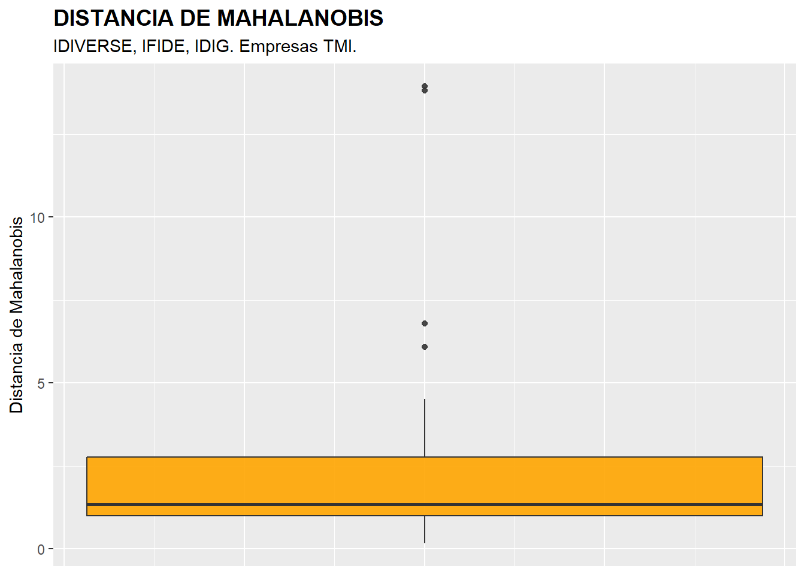
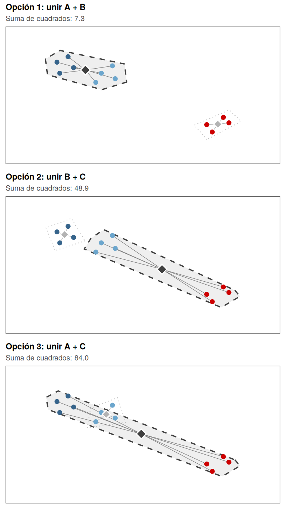
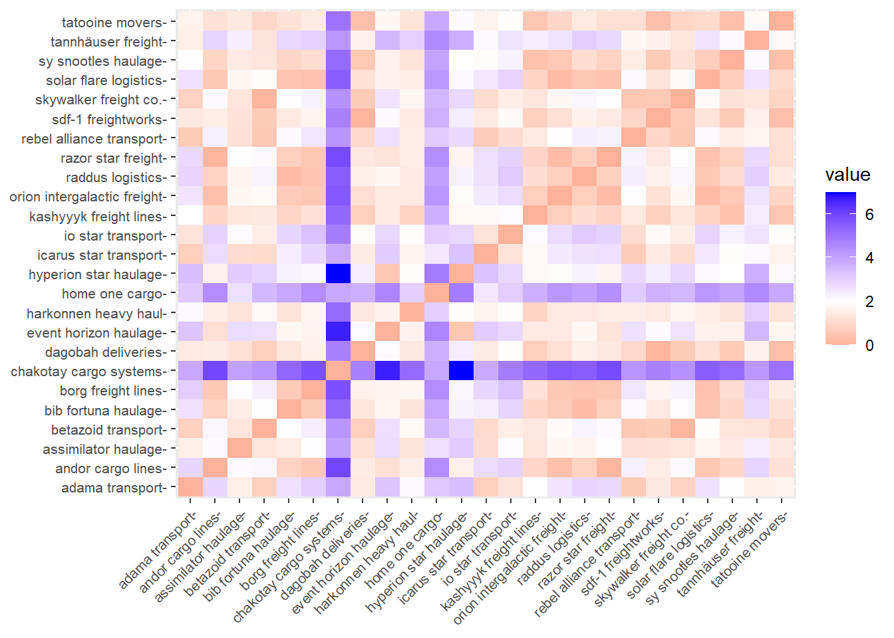
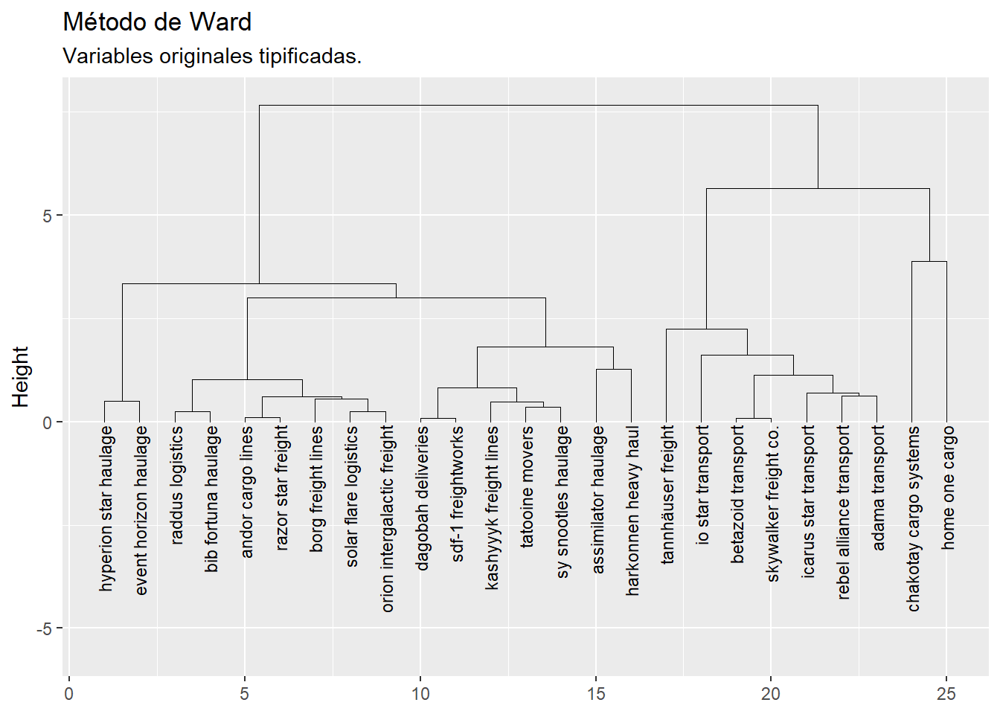
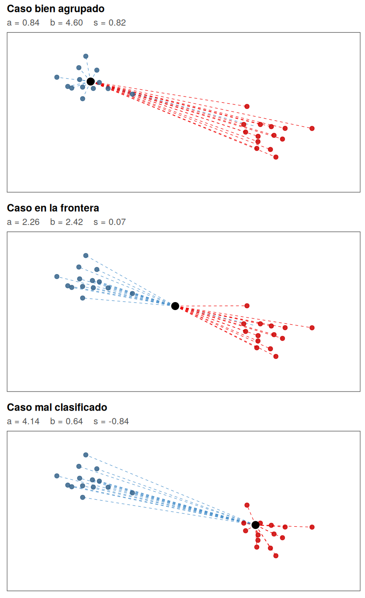
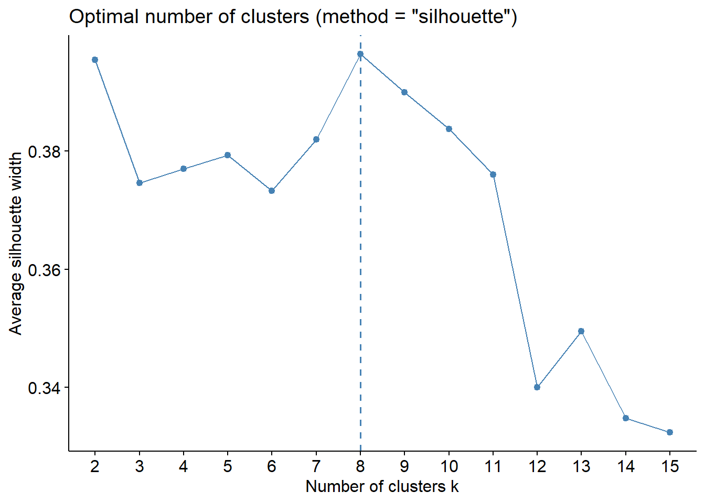
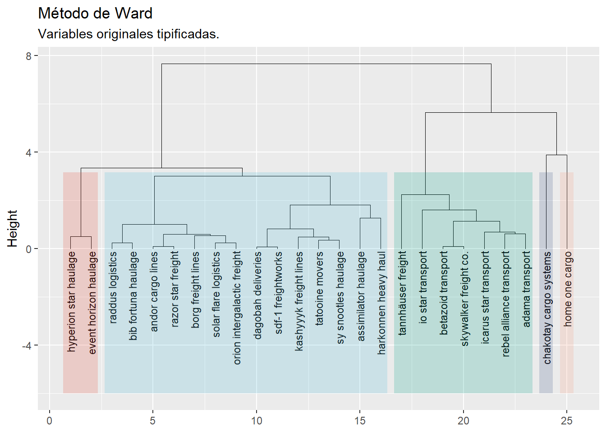
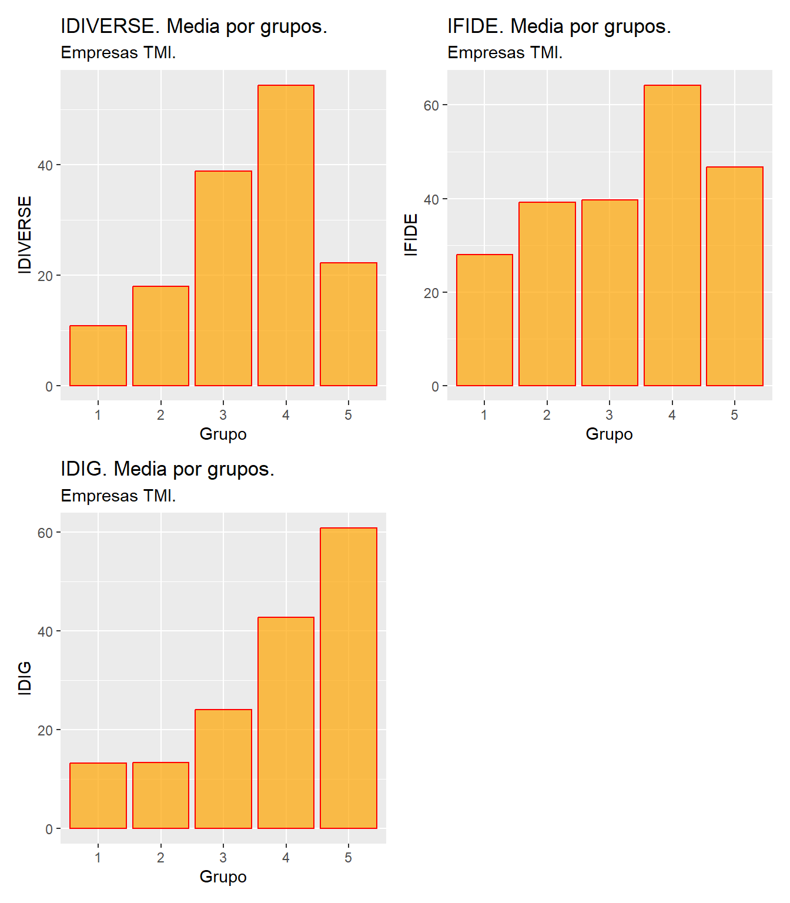
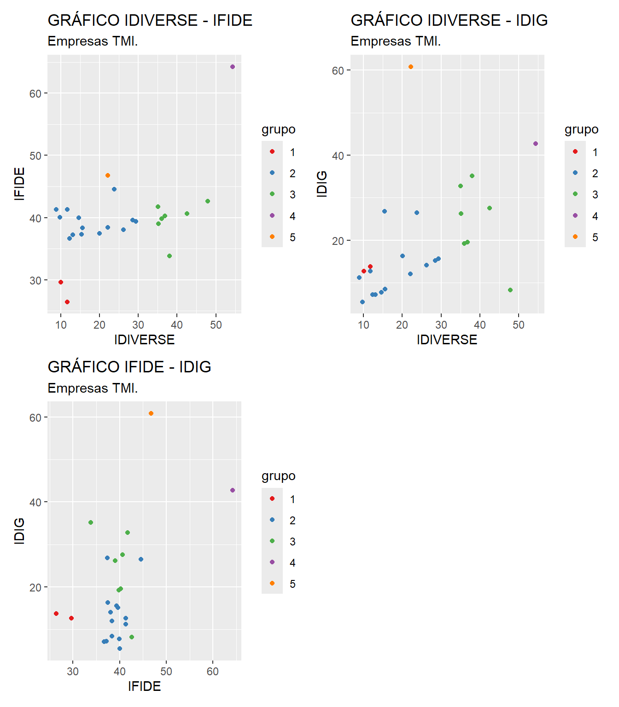

5 Análisis clúster jerárquico.

Figura 5.1. Grupos de cargueros en travesía.
5.1 Introducción.
El análisis de conglomerados —o análisis de clústeres (AC)— agrupa casos con características similares en función de un conjunto de variables clasificadoras. El objetivo es que:
- Los casos de un mismo clúster sean lo más homogéneos posible entre sí.
- Los clústeres entre sí sean lo más heterogéneos posible, de acuerdo con las variables consideradas.
En general, el proceso de determinación de los grupos, conglomerados o clústeres de casos es el siguiente:
- Se parte de un conjunto de n casos, y para cada uno de ellos se cuenta con el valor de m variables clasificadoras.
- Se establece una medida de distancia que cuantifica lo que dos casos se parecen, considerando en conjunto los valores que poseen para las variables clasificadoras.
- Se crean los grupos, conglomerados o clústeres con los casos que poseen entre sí una menor distancia.
- Finalmente, se caracterizan los grupos, conglomerados o clústeres obtenidos, y se comparan unos con otros para extraer conclusiones.
En lo que respecta a la medida de distancia entre los casos, la medida más habitual es la distancia euclídea. Así, la distancia euclídea entre dos casos, i e i’, para las m variables clasificadoras x, será:
\[ d(i, i') = \sqrt{\sum_{j=1}^{m} (x_{ij} - x_{i'j})^2} \]
Esta distancia es muy sensible a la escala de las variables clasificadoras. Para evitar este inconveniente, se trabaja con las variables previamente tipificadas.
5.1.1 Clasificación de los métodos de análisis clúster.
En la literatura actual (Kaufman and Rousseeuw 1990; Xu and Wunsch 2005; Jain 2010; Aggarwal 2015), los métodos de análisis clúster se clasifican en cinco grandes familias:
Métodos jerárquicos. Van formando sucesivamente grupos como agrupación de otros grupos precedentes (métodos aglomerativos: Ward, single linkage, complete linkage…) o dividen recursivamente un único grupo inicial (métodos divisivos). Producen una estructura piramidal (dendrograma).
Métodos de partición o basados en centroides. Asignan los casos a un número prefijado de grupos, minimizando la varianza intra-clúster. El más representativo es k-medias.
Métodos basados en densidad. Detectan regiones densamente pobladas del espacio de variables y las declaran clústeres, dejando fuera los casos aislados como ruido. El más representativo es DBSCAN.
Métodos basados en modelos. Suponen que los datos provienen de una mezcla de distribuciones (típicamente gaussianas).
Métodos basados en cuadrículas o en grafos. Discretizan el espacio en celdas o construyen grafos de similitud.
En este capítulo abordaremos el primero de ellos, los métodos jerárquicos, en concreto el método de Ward, muy adecuado cuando el número de casos es reducido y se quiere clasificar a todos ellos. Los métodos de k-medias y DBSCAN se desarrollan en el capítulo 7 de R-Stars: La Guía.
5.2 El Informe Bluebird.
Figura 5.2. Agencia Interplanetaria del Transporte de Mercancías.
La Agencia Interplanetaria de Transporte de Mercancías (AITM) tiene entre sus cometidos el estudio del sector desde una perspectiva de segmentación. La doctora Xelia Bluebird (en la imagen), investigadora sénior de la agencia, es la responsable del informe anual de segmentación empresarial que lleva su nombre.
Figura 5.3. Xelia Bluebird, investigadora de la AITM.
Este año, el primer encargo del Informe Bluebird es un panel de candidatas premium. Tras la reciente compra de Home One Cargo por Arg-us Korp, la AITM ha seleccionado un panel de 25 empresas top para ofrecerles un programa de consultoría personalizada. Bluebird debe agrupar estas 25 candidatas en un número reducido de perfiles y ubicar en qué grupo queda encuadrada Home One Cargo junto a otras empresas de referencia. Al ser una muestra pequeña, donde nos interesa clasificar todos los casos —incluidos los eventuales outliers—, se aplicará un método jerárquico (algoritmo de Ward).
Las variables clasificadoras son los índices de fidelización de clientes (IFIDE), diversificación del negocio (IDIVERSE) y digitalización de la compañía (IDIG).
5.3 Análisis jerárquico: el método de Ward.
En los métodos jerárquicos aglomerativos, se van formando sucesivamente grupos como agrupación de otros grupos precedentes, hasta llegar a un único grupo que recoge a todos los individuos; tomando el proceso una estructura piramidal. Estos métodos son especialmente adecuados cuando hay un número reducido de casos y se quieren clasificar todos los casos —incluidos los outliers—, así como cuando se desconoce a priori el número de grupos a formar.
Entre los métodos jerárquicos aglomerativos más extendidos figuran:
- Vecino más cercano (single linkage): distancia entre grupos = distancia entre sus elementos más próximos.
- Vecino más lejano (complete linkage): distancia entre grupos = distancia entre sus elementos más lejanos.
- Método de Ward: se unen los grupos que dan lugar a otro grupo con menor varianza intra-clúster (menor suma de cuadrados respecto al centroide).
En la práctica, el método de Ward es uno de los más utilizados porque proporciona grupos muy homogéneos. Será el que apliquemos al panel de 25 candidatas premium.
5.3.1 Preparación de los datos.
Vamos a suponer que trabajamos dentro de un proyecto que hemos creado previamente, de nombre “cluster”. Dentro de la carpeta del proyecto guardaremos el script “cluster_lite.R” y el archivo de Microsoft® Excel® “interestelar_25.xlsx”, con diferentes variables económicas y financieras de las 25 empresas del panel.
Comenzaremos con los pasos habituales: limpiar el Global Environment, cargar MATlite, importar los datos y seleccionar las variables clasificadoras:
### CLUSTER jerárquico 25 empresas TMI.###
# Limpiando el Global Environment
rm(list = ls())
# Cargando el paquete de la asignatura
library(MATlite)
## DATOS
interestelar_25 <- lite_importa("interestelar_25.xlsx")
# Seleccionando las variables clasificadoras
seleccion <- interestelar_25 %>% select(IDIVERSE, IFIDE, IDIG)
lite_resumen(seleccion)| seleccion | ||||||
| 25 rows x 3 cols | ||||||
| Column | Plot Overview | Missing | Mean | Median | SD | |
|---|---|---|---|---|---|---|
| IDIVERSE | 0.0% | 24.8 | 22.2 | 13.0 | ||
| IFIDE | 0.0% | 39.8 | 39.6 | 6.6 | ||
| IDIG | 0.0% | 19.4 | 15.1 | 13.1 | ||
Tabla 5.1
Para el diagnóstico de los missing values aplicamos la función lite_na():
# Diagnóstico y filtrado de missing values.
seleccion <- lite_na(seleccion, accion = "eliminar")No se ha localizado ninguna observación con missing values (la función lo indica con un mensaje en la consola), luego no se ha de realizar ningún tipo de tratamiento.
El siguiente paso es la identificación de outliers. Como contamos con 3 variables métricas, lite_outliers() calculará la distancia de Mahalanobis de cada caso y le aplicará la regla de 1,5 veces el rango intercuartílico. En esta ocasión no indicamos accion = "eliminar", porque no queremos eliminar los outliers, sino solo identificarlos:
# Diagnóstico de outliers (sin eliminarlos).
lite_outliers(seleccion,
titulo = "DISTANCIA DE MAHALANOBIS",
subtitulo = "IDIVERSE, IFIDE, IDIG. Empresas TMI.")
Figura 5.4
| MAHALANOBIS | IDIVERSE | IFIDE | IDIG | |
|---|---|---|---|---|
| chakotay cargo systems | 13.930441 | 54.36815 | 64.26013 | 42.719724 |
| home one cargo | 13.818423 | 22.17602 | 46.77635 | 60.832514 |
| tannhäuser freight | 6.791335 | 47.88846 | 42.64052 | 8.209292 |
| io star transport | 6.088895 | 38.02063 | 33.82858 | 35.117771 |
Tabla 5.2
De la tabla anterior se desprende que los outliers identificados son las empresas Chakotay Cargo Systems, Home One Cargo, y de modo más moderado, Tannhäuser Freight e Io Star Transport. Estos son, en definitiva, los 4 casos en los que nos fijaremos específicamente más adelante, al analizar los resultados del análisis clúster.
Estas empresas cuentan con un valor atípico en la distancia de Mahalanobis, lo que, a su vez, implica que muestren valores atípicos en una o varias de las variables originales (IDIVERSE, IFIDE, IDIG). En el desarrollo de otras técnicas, en este punto localizaríamos y eliminaríamos los outliers. En este caso no lo vamos a hacer, ya que queremos agrupar todos los casos que tenemos en el análisis. Precisamente, si hay algún caso que permanece aislado, sin agruparse con otros en el proceso de agrupación hasta las últimas etapas, quizá se trate de un candidato a outlier, por lo que el análisis clúster también puede considerarse una técnica de localización de casos atípicos.
5.3.2 El criterio del método de Ward.
Antes de aplicarlo, conviene detenerse en cómo decide el método de Ward qué grupos fusionar en cada etapa, porque es lo que explica que produzca conglomerados tan compactos.
En cada paso del proceso hay varias fusiones posibles. Ward las evalúa todas y se queda con la que da lugar al grupo resultante más compacto: aquel cuyos casos presentan la menor suma de los cuadrados de sus distancias al centroide del grupo. Dicho de otro modo, en cada etapa se escoge la unión que menos aumenta la varianza interna.
Veámoslo con un ejemplo mínimo. Supongamos que, en una etapa intermedia, el proceso ha formado ya tres grupos (A, B y C) y debe fusionar dos de ellos, dejando el tercero suelto. Hay, por tanto, tres opciones:

Figura 5.5. Criterio del método de Ward: las tres fusiones posibles de tres grupos previos y la suma de cuadrados de cada una. Se elige la de menor suma (opción 1).
En los tres paneles los casos son los mismos y ocupan las mismas posiciones; lo único que cambia es qué dos grupos quedan envueltos juntos por la línea discontinua. Los rombos son los centroides —el oscuro, el del grupo fusionado; el gris, el del grupo que queda aparte— y los radios finos unen cada caso con el centroide de su grupo: la suma de sus cuadrados es justamente la cifra del subtítulo.
El algoritmo elige la Opción 1, con diferencia la de menor suma. Y el resultado es intuitivo: A y B están próximos entre sí, de modo que fusionarlos produce un grupo apretado, mientras que arrastrar a C —que está lejos— a cualquiera de los otros dos generaría un conglomerado enorme y disperso.
5.3.3 Aplicación del método de Ward: exploración.
Todo el análisis se realiza con la función lite_cluster_ward(), en dos fases. En la primera, de exploración, la llamamos sin indicar el número de grupos. La función:
- tipifica las variables, ya que la distancia euclídea es sensible a sus unidades de medida;
- calcula la matriz de distancias entre los casos;
- aplica el método de Ward y dibuja el dendrograma;
- y sugiere un número de grupos mediante el método de la silueta, que explicaremos enseguida.
# Fase 1. Exploración
exploracion <- lite_cluster_ward(seleccion)Veamos primero la matriz de distancias, representada como un gráfico de temperatura:
exploracion$distancias
Figura 5.6
Los casos con intersecciones en tonos anaranjados tenderán a agruparse con mayor facilidad (o a agruparse antes); mientras que los casos cuyas intersecciones están en tonos azulados tenderán a pertenecer a grupos diferentes (o a agruparse más tarde). Cabe destacar los colores azulados asociados a las empresas Chakotay Cargo Systems, Home One Cargo, que precisamente eran las dos compañías identificadas más claramente como outliers.
El resultado del método de Ward se resume en el dendrograma:
exploracion$dendrograma
Figura 5.7
El eje vertical del dendrograma recoge las distancias entre casos y grupos que se van agrupando sucesivamente. En el método de Ward, esta escala refleja la suma de cuadrados de la distancia de los casos dentro del clúster.
Cabe observar que las empresas Chakotay Cargo Systems y Home One Cargo —los outliers identificados antes— permanecen sin agruparse hasta el final del proceso, lo que confirma su perfil diferenciado. En cambio, empresas como Betazoid Transport y Skywalker Freight Co. se unen muy pronto, indicando su gran similitud.
Una cuestión importante consiste en determinar con cuántos grupos hemos de quedarnos. Aunque existen algoritmos que aconsejan un número, a veces puede ser preferible que el propio investigador decida el número de grupos a crear, mediante la observación del dendrograma, y de acuerdo a los objetivos de su propia investigación.
Dentro de los métodos objetivos, uno muy extendido es el del método de la anchura media de silueta. Para cada observación \(i\), la anchura de la silueta \(s_i\) se calcula como:
\[ s_i = \frac{b_i - a_i}{\max(a_i, b_i)} \]
Donde:
- \(a_i\) es la distancia promedio de la observación \(i\) a todas las demás observaciones dentro de su propio clúster.
- \(b_i\) es la distancia promedio de la observación \(i\) al clúster más cercano.
Conviene visualizar estas dos distancias, porque de su comparación sale todo lo demás. En el ejemplo siguiente hay dos grupos, A (en azul) y B (en rojo), y se han destacado en negro tres casos asignados al grupo A de naturaleza muy distinta. Las líneas discontinuas azules son las distancias que promedia \(a_i\); las rojas, las que promedia \(b_i\):

Figura 5.8. Cálculo del ancho de silueta para tres casos de distinta naturaleza: bien agrupado, en la frontera y mal clasificado.
La lectura de los tres paneles resume el significado del indicador:
- En el primer caso, \(a\) es pequeña y \(b\) es grande: el caso está rodeado de los suyos y lejos del grupo vecino. El numerador \(b-a\) es casi tan grande como el propio \(b\), de modo que \(s\) se aproxima a 1.
- En el segundo, \(a\) y \(b\) son prácticamente iguales: el caso está a medio camino entre los dos grupos y le resulta indiferente pertenecer a uno o a otro. El numerador se anula y \(s\) ronda el 0.
- En el tercero, \(b\) es mucho menor que \(a\): el caso está de lleno dentro del grupo vecino, pese a haber sido asignado al propio. El numerador se vuelve negativo y \(s\) también.
La anchura de la silueta varía entre -1 y 1. Un valor cercano a 1 indica que la observación está bien agrupada dentro de su clúster; un valor cercano a 0 quiere decir que la observación está en el límite entre dos clústeres; y un valor negativo implica que la observación podría estar mal clasificada en su clúster actual. De este modo, para evaluar cuál es el mejor número de conglomerados a retener:
Se prueban diferentes valores de \(k\) (número de clústeres).
Se calcula el promedio de los valores de silueta para cada \(k\).
Se selecciona el \(k\) que maximiza el promedio de la silueta, lo que indica que la partición es más adecuada.
De todos modos, es necesario insistir en que estos métodos no llevan a una conclusión única ni irrevocable; por lo que puede ser preferible que el propio investigador decida el número de grupos a crear, tomando los métodos cuantitativos solo como orientación. En nuestro caso, el gráfico del método de la silueta es:
exploracion$silueta
Figura 5.9
El método aconseja una división de los casos en 8 grupos o conglomerados diferentes (la función lo indica también con un mensaje en la consola). Sin embargo, parece un número excesivo si se quieren caracterizar posteriormente los grupos e incidir en sus diferencias. Un segundo número de grupos apropiado según el método es 2; pero podría ocurrir lo contrario que el caso anterior: sería un valor demasiado bajo, lo que provocaría que tan solo se distinguiese un grupo con los dos outliers de otro con los 23 casos restantes. Así, el investigador puede decidir qué número de grupos parece equilibrado y se ajusta a sus intereses. En este ejemplo, un número de grupos razonable podría ser 5, que contaría con el aval de mantener individualizadas a 2 de las empresas etiquetadas como outliers.
5.3.4 Aplicación del método de Ward: resultados.
Decidido el número de grupos, llamamos de nuevo a lite_cluster_ward(), indicándolo ahora con el argumento k:
# Fase 2. Resultados con el número de grupos decidido
grupos <- lite_cluster_ward(seleccion, k = 5, subtitulo_graficos = "Empresas TMI.")El dendrograma muestra ahora los grupos formados:
grupos$dendrograma
Figura 5.10
Del gráfico se pueden extraer varios conglomerados: dos empresas destacadas (Hyperion Star Haulage y Event Horizon Haulage) forman un grupo con perfil claramente diferenciado; un grupo central numeroso agrupa compañías con comportamientos homogéneos, que representan el segmento “medio” del sector; un tercer grupo reúne empresas ligeramente más avanzadas; y, finalmente, las dos empresas más singulares (Chakotay Cargo Systems y Home One Cargo), identificadas como outliers en el análisis previo, quedan aisladas cada una en su propio clúster.
Los grupos se numeran de izquierda a derecha, en el mismo orden en que aparecen en el dendrograma.
5.3.5 Caracterización de los grupos o conglomerados.
Para caracterizar los grupos, lite_cluster_ward() calcula el número de empresas de cada uno y las medias de cada variable original (sin tipificar), es decir, sus centroides:
grupos$centroides| Clúster | Observaciones | IDIVERSE | IFIDE | IDIG |
|---|---|---|---|---|
| 1 | 2 | 10.877 | 28.039 | 13.206 |
| 2 | 14 | 17.945 | 39.253 | 13.301 |
| 3 | 7 | 38.788 | 39.712 | 24.083 |
| 4 | 1 | 54.368 | 64.260 | 42.720 |
| 5 | 1 | 22.176 | 46.776 | 60.833 |
Tabla 5.3
Las medias de cada variable se comparan también en gráficos de barras:
grupos$graficos_centroides
Figura 5.11
Hablando siempre en términos de la media (centroides), puede comprobarse cómo el grupo 4 (compañía Chakotay Cargo Systems) destaca por su alto valor en el índice de diversificación y en el Fidelización, quedando en segunda posición en el índice de digitalización. El otro grupo de una única compañía, el grupo 5, que contiene a la empresa Home One Cargo, destaca por poseer el mayor índice de digitalización. En adición, ocupa la segunda posición en el índice de fidelización. Por último, en cuanto al índice de diversificación, ocupa una posición media. En cuanto al grupo 3, en promedio es un conglomerado formado por empresas con índices de fidelización y digitalización medios, mientras que en cuando a la diversificación ocupa una destacada segunda posición, solo por detrás del grupo 4. Por su parte, las empresas del grupo 2, en promedio, presentan un índice de fidelización medio, mientras que los índices de diversificación y digitalización son más bien bajos. Por último, el grupo 1, compuesto por las compañías Hyperion Star Haulage y Event Horizon Haulage, se caracteriza por mostrar los menores valores medios en los tres indicadores.
La composición de cada grupo, con los valores de sus empresas, está en la pieza composicion, que contiene una tabla por grupo. Escribiendo grupos$composicion las veríamos todas seguidas; para ver la de un grupo concreto, añadiremos su número entre dobles corchetes:
grupos$composicion[[1]] # Grupo 1| IDIVERSE | IFIDE | IDIG | |
|---|---|---|---|
| hyperion star haulage | 11.715 | 26.444 | 13.741 |
| event horizon haulage | 10.039 | 29.634 | 12.671 |
Tabla 5.4
grupos$composicion[[2]] # Grupo 2| IDIVERSE | IFIDE | IDIG | |
|---|---|---|---|
| assimilator haulage | 23.746 | 44.533 | 26.489 |
| harkonnen heavy haul | 15.384 | 37.327 | 26.764 |
| raddus logistics | 8.859 | 41.290 | 11.198 |
| bib fortuna haulage | 11.699 | 41.293 | 12.653 |
| kashyyyk freight lines | 20.016 | 37.426 | 16.311 |
| solar flare logistics | 14.649 | 39.952 | 7.764 |
| dagobah deliveries | 28.546 | 39.594 | 15.146 |
| tatooine movers | 26.202 | 38.074 | 14.075 |
| orion intergalactic freight | 15.535 | 38.370 | 8.449 |
| andor cargo lines | 12.282 | 36.643 | 7.138 |
| sy snootles haulage | 22.086 | 38.396 | 12.017 |
| sdf-1 freightworks | 29.387 | 39.361 | 15.577 |
| borg freight lines | 9.758 | 40.071 | 5.452 |
| razor star freight | 13.079 | 37.215 | 7.178 |
Tabla 5.5
grupos$composicion[[3]] # Grupo 3| IDIVERSE | IFIDE | IDIG | |
|---|---|---|---|
| io star transport | 38.021 | 33.829 | 35.118 |
| icarus star transport | 35.055 | 41.709 | 32.762 |
| rebel alliance transport | 35.200 | 39.025 | 26.189 |
| adama transport | 42.547 | 40.666 | 27.549 |
| tannhäuser freight | 47.888 | 42.641 | 8.209 |
| betazoid transport | 36.825 | 40.267 | 19.507 |
| skywalker freight co. | 35.983 | 39.847 | 19.243 |
Tabla 5.6
grupos$composicion[[4]] # Grupo 4| IDIVERSE | IFIDE | IDIG | |
|---|---|---|---|
| chakotay cargo systems | 54.368 | 64.26 | 42.72 |
Tabla 5.7
grupos$composicion[[5]] # Grupo 5| IDIVERSE | IFIDE | IDIG | |
|---|---|---|---|
| home one cargo | 22.176 | 46.776 | 60.833 |
Tabla 5.8
Para representar los grupos gráficamente, tenemos la dificultad de contar con más de dos variables clasificadoras. Una idea es dibujar los gráficos de dispersión de todos los pares de variables, con los casos coloreados de modo diferente según el grupo de pertenencia:
grupos$dispersion
Figura 5.12
Los gráficos de dispersión ratifican los perfiles: los clústeres 1 y 2 se sitúan en la parte baja del eje de diversificación, con las empresas más tradicionales; el clúster 3 reúne a las compañías equilibradas y en fase de modernización; y los clústeres 4 (Chakotay Cargo Systems) y 5 (Home One Cargo), pese a formar cada uno una empresa aislada, muestran comportamientos muy distintos entre sí: la primera es una empresa muy diversificada y con alta fidelidad; la segunda destaca por su altísima digitalización. En cuanto a las relaciones entre las variables, se aprecia una correlación positiva leve entre diversificación y fidelidad, algo más marcada en los grupos avanzados; la digitalización no siempre acompaña a la diversificación, salvo en los perfiles más maduros; y la fidelidad no depende directamente del grado de digitalización, sino que refleja otros factores como la calidad del servicio y la trayectoria de la empresa.
Por último, la pieza datos contiene el data frame original con una nueva columna, “grupo”, que indica el conglomerado al que pertenece cada empresa. Podemos guardarlo para utilizarlo en análisis posteriores:
# Data frame con el grupo de cada empresa
seleccion_grupos <- grupos$datosCierre del Informe Bluebird. El panel de 25 candidatas premium queda encuadrado en cinco perfiles nítidos. Home One Cargo ha resultado ser una empresa singular: un perfil altamente digitalizado, pero de diversificación moderada. La AITM concluye que la reciente adquisición por parte de Arg-us Korp aporta al grupo del magnate una compañía de perfil tecnológicamente avanzado y especializado, que difícilmente hubiera podido encontrarse dentro del segmento medio del sector.
5.4 Materiales para realizar las prácticas del capítulo.
En esta sección se muestran los links de acceso a los diferentes materiales (scripts, datos…) necesarios para llevar a cabo los contenidos prácticos del capítulo.
Datos (en formato Microsoft® Excel®):
- interestelar_25.xlsx (obtener aquí), o bien, desde R:
lite_datos("interestelar_25").
Script:
- cluster_lite.R (obtener aquí)